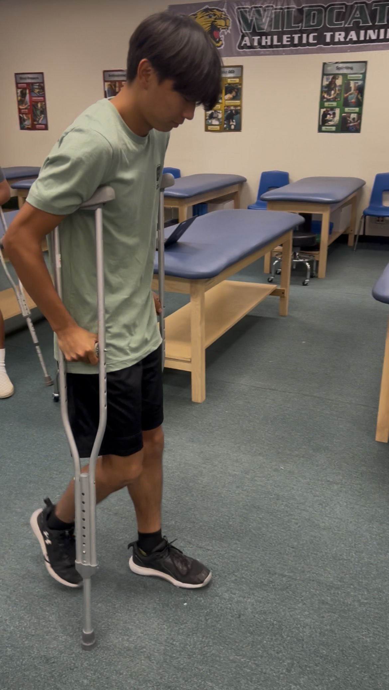
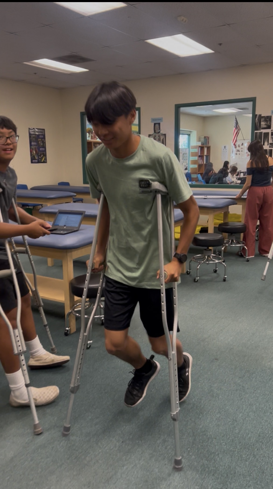
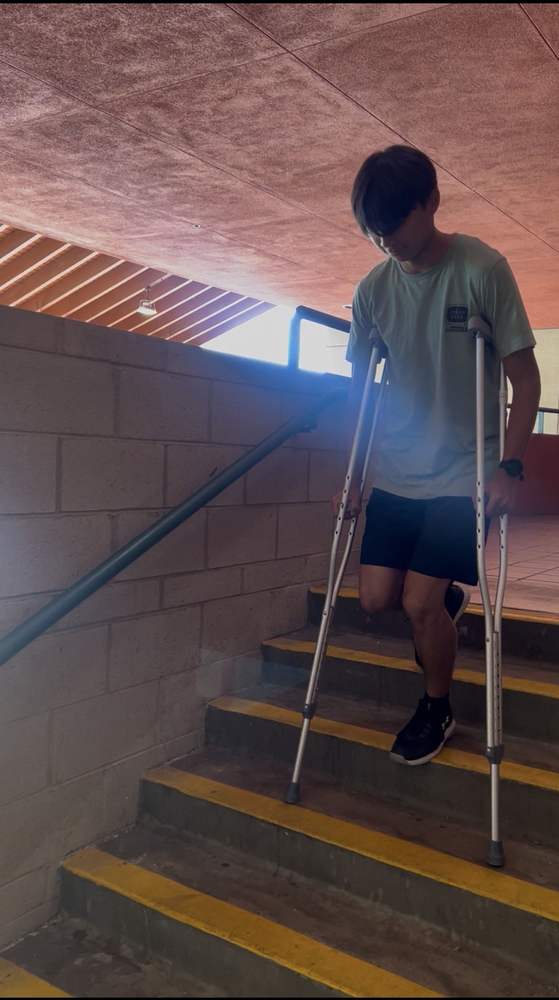
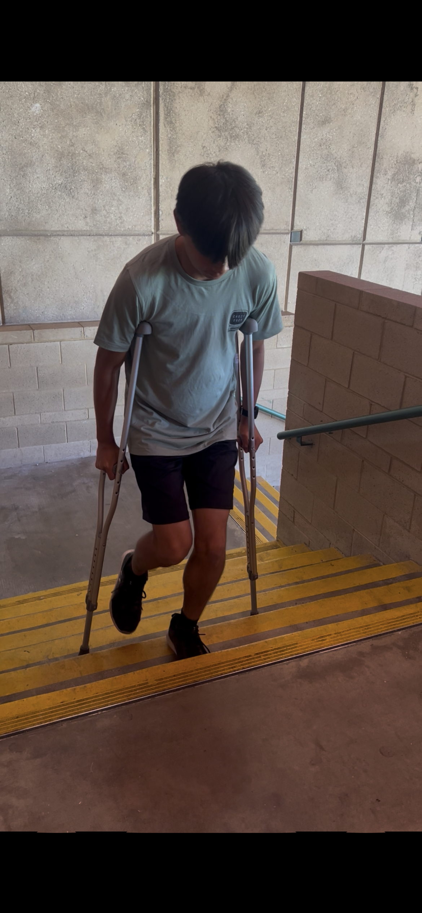

Crutches Explained
Proper crutch fitting and use are essential for safety and comfort. The crutches should be adjusted to the user’s height, allowing slight elbow bend and space under the armpits. Different weight-bearing types determine how much weight can be placed on the injured leg. When walking or using stairs, balance, posture, and awareness of the surroundings are key to preventing falls or strain.
Sizing and Fitting
- Have the athlete stand tall with feet together and hands relaxed by their sides
- Position crutch tips 6” from outer part of the shoes and 2” in front of toes
- Adjust underarm brace height to a 2-3 finger widths below the anterior fold of the axilla, allowing 20-30 degree bend of the elbow
Using Crutches
- Non-Weight Bearing (NWB): do not apply any weight through involved leg
- Straighten the elbows and pull the underarm brace firmly against the side of chest on ribs
- Lean forward and swing the involved leg followed by the uninvolved leg
- After moving, athlete recovers the crutches and repeats
- Partial Weight Bearing (PWB or Crutch Walking: allow a maximum of 50% body weight to be applied to the involved leg
- Crutch Walking - place more force on crutches - involved leg first, then uninvolved leg
Stairs
- Upstairs: balance on crutches, step upward with the uninvolved leg, follow with crutches
- Downstairs: balance on involved leg, place crutches on lower step, follow with the uninvolved leg

Crutch Fitting




Using Crutches